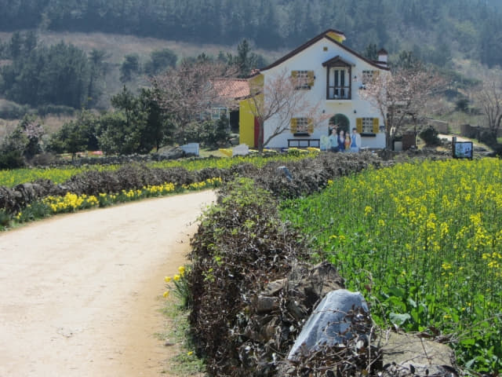
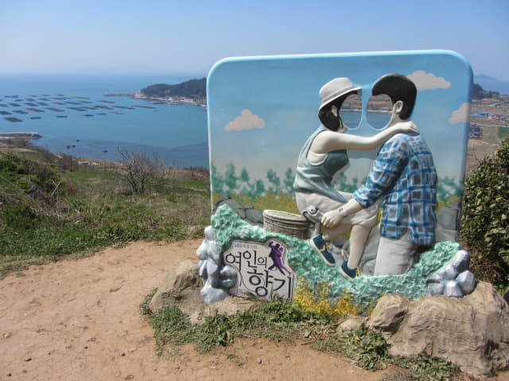

進入1 號路線第三段的堂洛里村, 經過有過千年歷史的堂里村神殿, 在崖邊《西便制》拍攝場地草屋欣賞完山下優美景色, 接著繼續往前走, 迎面便是經常在青山島宣傳海報看到的夢幻畫面, 呈現眼前的羊腸小路便是電影《西便制》中, 父親與兒女沿着黃土小路, 高唱珍島阿里郎的拍攝場景, 而這段約三百米的黃土羊腸小路從此便被稱為「西便制路」。自從韓劇《匹諾曹》在這裡取景拍攝, 劇中男女主角達浦和仁荷騎著自行車穿過這黃土小路上學後, 這段路也稱為「達浦和仁荷上學的路」。很多旅客來青山島就只是為了看這段西便制路或達浦和仁荷上學的路, 可見它的魅力非凡。
循西便制路慢慢往上走, 沿途都可以聽到電影《西便制》中三人高唱珍島阿里郎的歌曲, 雖然我們聽不懂, 但也哼著斷斷續續熟悉的音調:「阿里郎兒呀哎~~~~ 阿里郎兒呀哎~~~~ 兒兒~~~呀呀~~~~~」, 玩得十分開心。
西便制路另一邊有一間白色歐陸的小屋, 那裡便是韓劇《春天華爾茲》的拍攝場地。相對《西便制》, 較近期拍攝的《春天華爾茲》更廣為人熟悉, 也令青山島一躍成為熱門的旅遊景點, 也幸好這裡比較偏遠, 交通不便, 以致很多速食旅客裹足不前, 令這裡至今還可以保留寧靜樸素的環境。
環境真是很美, 不枉此行。
好像童話世界中的風景一樣。

回頭望望剛才走來的西便制路。

當所有注意都放在前面的白色歐陸小屋, 偶爾望望右邊山下的景色, 不禁讚嘆四周風光如畫。
走完整段西便制路, 迎面便是《春天華爾茲》拍攝場地的白色歐陸小屋, 簡直就是進入了童話世界、夢幻場景!
可以在這裡居住, 太幸福了!
另一齣韓劇《女人的香氣》也曾經在這裡取景。
